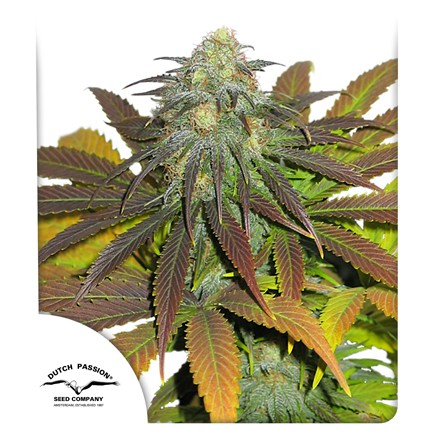
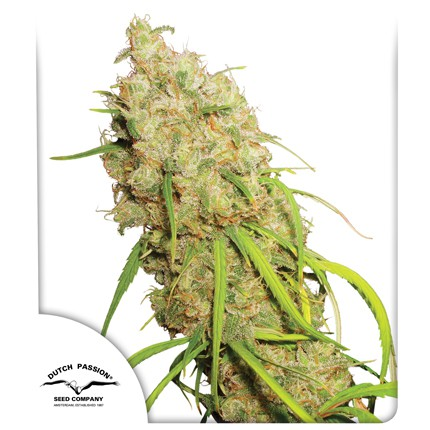
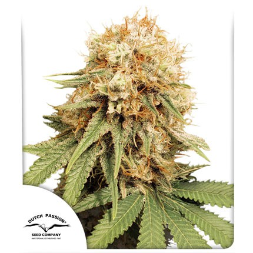

Californian-Orange
Californian Orange tiene un perfil de terpenos muy afrutado y cítrico dominante. Estas variedades de Orange fueron un éxito instantáneo y hoy en día siguen siendo muy apreciadas. Californian Orange de Dutch Passion es una variedad estabilizada con un nivel de TCH mediano y un efecto intenso, aunque relajado. Sus cogollos son extremadamente resinosos y famosos entre los productores de concentrados de cannabis. ¡Esta variedad garantiza una experiencia de cannabis California de ensueño única!
Desfran
Desfrán es una planta de cannabis fotoperiódica única. A diferencia de otras híbridas de sativa dominante, nuestra Desfrán termina relativamente rápido, con un tiempo de floración de unas 12 semanas. Es una de las mejores variedades con las que se ha topado Alberto, y esperamos que a ti también te encante!
Tropical-Tangie

Tropical Tangie es una hermosa variedad de cannabis fotoperiódica disponible en semillas de cannabis feminizadas. Su aroma y sabor únicos, combinados con un subidón eufórico y relajante, la hacen muy popular entre los conocedores del cannabis.La apariencia exótica también proporciona un atractivo en bolsa sensacional. ¡Este es un nuevo clásico de Dutch Passion que debes cultivar al menos una vez! Un cóctel de frutas tropicales como nunca antes habías probado.
White-Widow
White Widow tiene la reputación de ser una de las variedades más fuertes jamás creadas.El resultado es esta variedad legendaria y muy buscada de excelente calidad con cogollos gruesos y blancos debido a los cristales. White Widow de Dutch Passion es muy consistente y fácil de cultivar en cualquier medio. La calidad y la consistencia son particularmente destacadas en esta versión feminizada, que se ha convertido en un éxito de ventas y un estándar que otras compañías de semillas se esfuerzan por igualar.